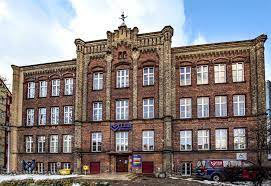
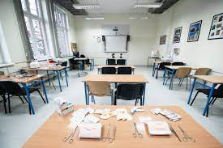

Dzień otwarty Technikum TEB Edukacja Gdańsk
Dmowskiego 16A
21 marca 2023
10:00

O nas:
Szkoła działa od 1994 roku. Dwadzieścia jeden lat obecności na rynku i stałe podnoszenie poziomu kształcenia spowodowały, że obecnie jesteśmy jedną z najbardziej wiarygodnych instytucji oświatowych w kraju. TEB Edukacja przygotowując ofertę, przede wszystkim bierze pod uwagę oczekiwania swoich słuchaczy.
Oferta TEB Edukacja w Gdańsku obejmuje: szkoły medyczne, szkoły policealne, technikum oraz liceum dla dorosłych. Oferujemy ponad 30 atrakcyjnych kierunków z państwowymi uprawnieniami (dyplom technika) oraz dodatkowe certyfikaty i specjalistyczne szkolenia. Stawiamy na praktyczną naukę zawodów poszukiwanych na rynku pracy - minimum 50% zajęć odbywa się w profesjonalnie wyposażonych pracowniach. Naszą kadrę dydaktyczną stanowią przyjaźni i wspierający nauczyciele m.in. z Gdańskiego Uniwersytetu Medycznego, Uniwersytetu Gdańskiego, Politechniki Gdańskiej, i Wyższej Szkoły Bankowej w Gdańsku, jak i wieloletni praktycy danych zawodów. Nauka odbywa się w trzech trybach – dziennym, wieczorowym oraz zaocznym.

Dni otwarte:
sala 02 - powitanie gości
sala 09 - pracownia fotograficzna
sala 103 - zespół muzyczny
sala 106 - Warsztat reklamowy
sala107 - google VR
sala 108 weterynaria
sala 206 - programiści
sala 208 - sala pokazowa dla gości
sala 301 /302 - wystawa fotografii
sala 306/307- finał turnieju CS:GO ze streamingiem na żywo
sala 305PKO, 313 PKO - fryzjerstwo
sala 506 PKO - montażowa
sala 508B PKO - reklama
Telefon:
Tel: Biuro rekrutacji: 58 765 96 90
Tel: Sekretariat Szkoły Policealnej: 58 765 96 92
Tel. Sekretariat Technikum dla Młodzieży: 58 770 05 03
Tel. Sekretariat Liceum Ogólnokształcącego dla Młodzieży: 58 770 05 06
godziny otwarcia:
Biuro rekrutacji:
środa,piątek - 09:00-17:00 poniedziałek,wtorek,czwartek - 8:00- 16:00
sobota, niedziela - nieczynne
Sekretariat szkół policealnych:
Poniedziałek, Wtorek, Czwartek, Piątek - 8:00-16:00
Środa - nieczynne
Piątek - 9:00-17:00*
Sobota - 10:00-14:00*
Niedziela - 8:00-12:00 (w miesiącach: wrzesień, styczeń, czerwiec) w dni zajęć
Sekretariat technikum:
poniedziałek - piątek - 08:00 - 15:00
sobota, niedziela - nieczynne
ZAPRASZAMY!!!